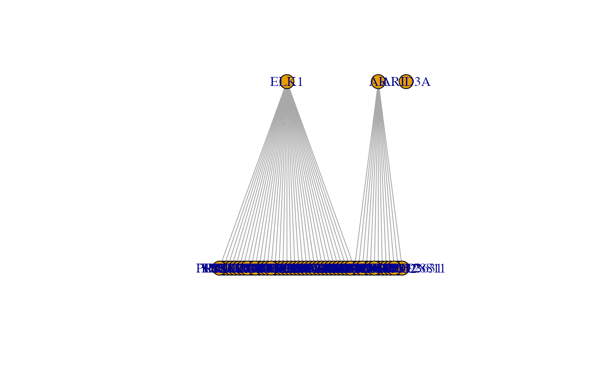
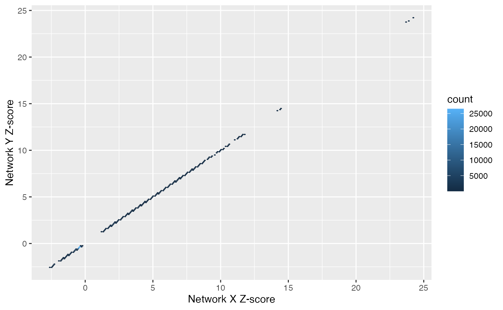

pandaR.RmdThe fundamental concepts behind the PANDA approach is to model the regulatory network as a bipartite network and estimate edge weights based on the evidence that information from a particular transcription factor i is successfully being passed to a particular gene j. This evidence comes from the agreement between two measured quantities. First, the correlation in expression between gene j and other genes. And second, the strength of evidence of the existence of an edge between TF i and those same genes. This concordance is measured using Tanimoto similarity. A gene is said to be available if there is strong evidence of this type of agreement. Analogous to this is the concept of responsibility which similarly focuses on a TF-gene network edge but instead measures the concordance between suspected protein-complex partners of TF i and the respective strength of evidence of a regulatory pathway between those TFs and gene j.
PANDA utilizes an iterative approach to updating the bipartite edge weights incrementally as evidence for new edges emerges and evidence for existing edges diminishes. This process continues until the algorithm reaches a point of convergence settling on a final score for the strength of information supporting a regulatory mechanism for every pairwise combination of TFs and genes. This package provides a straightforward tool for applying this established method. Beginning with data.frames or matrices representing a set of gene expression samples, motif priors and optional protein-protein interaction users can generate an m by n matrix representing the bipartite network from m TFs regulating n genes. Additionally, pandaR reports the co-regulation and cooperative networks at convergence. These are reported as complete graphs representing the evidence for gene co-regulation and transcription factor cooperation.
An example dataset derived from a subset of stress-induced Yeast is available by running
library(netZooR)## Loading required package: igraph##
## Attaching package: 'igraph'## The following objects are masked from 'package:stats':
##
## decompose, spectrum## The following object is masked from 'package:base':
##
## union## Loading required package: reticulate## Loading required package: pandaR## Loading required package: Biobase## Loading required package: BiocGenerics## Loading required package: parallel##
## Attaching package: 'BiocGenerics'## The following objects are masked from 'package:parallel':
##
## clusterApply, clusterApplyLB, clusterCall, clusterEvalQ,
## clusterExport, clusterMap, parApply, parCapply, parLapply,
## parLapplyLB, parRapply, parSapply, parSapplyLB## The following objects are masked from 'package:igraph':
##
## normalize, path, union## The following objects are masked from 'package:stats':
##
## IQR, mad, sd, var, xtabs## The following objects are masked from 'package:base':
##
## anyDuplicated, append, as.data.frame, basename, cbind, colnames,
## dirname, do.call, duplicated, eval, evalq, Filter, Find, get, grep,
## grepl, intersect, is.unsorted, lapply, Map, mapply, match, mget,
## order, paste, pmax, pmax.int, pmin, pmin.int, Position, rank,
## rbind, Reduce, rownames, sapply, setdiff, sort, table, tapply,
## union, unique, unsplit, which, which.max, which.min## Welcome to Bioconductor
##
## Vignettes contain introductory material; view with
## 'browseVignettes()'. To cite Bioconductor, see
## 'citation("Biobase")', and for packages 'citation("pkgname")'.## ## pandaToyData is a list containing a regulatory structure derived from sequence motif analysis, protein-protein interaction data and a gene expression. The primary function in pandaR is called with
pandaResult <- panda(pandaToyData$motif, pandaToyData$expression, pandaToyData$ppi)
pandaResult## PANDA network for1000genes and87transcription factors.##
## Slots:## regNet : Regulatory network of 87 transcription factors to 1000 genes.## coregNet: Co-regulation network of 1000 genes.## coopNet : Cooperative network of 87 transcription factors.## Regulatory graph contains 87000 edges.## Regulatory graph is complete.Where pandaResult is a ‘panda’ object which contains data.frames describing the complete bipartite gene regulatory network as well as complete networks for gene coregulation and transcription factor cooperation. Due to completeness, edgeweights for the regulatory network are reported for all mxn possible TF-gene edges. The distribution of these edge weights for these networks has approximate mean 0 and standard deviation 1. The edges are therefore best interpreted in a relative sense. Strongly positive values indicative of relatively larger amounts of evidence in favor a regulatory mechanism and conversely, smaller or negative values can be interpreted as lacking evidence of a shared biological role. It is naturally of interest to specify a high edge weight subset of the complete network to investigate as a set of present/absent edges. This is easily performed by using the topedges function. A network containing the top 1000 edge scores as binary edges can be obtained by:
topNet <- topedges(pandaResult, 1000)Users may then examine the genes targeted by a transcription factor of interest.
targetedGenes(topNet, c("AR"))## [1] "AKAP10" "CNDP2" "CRHR1" "HNRNPD" "KIAA0652"
## [6] "LOC100093631" "LOC100128811" "PRR15" "TCF4" "TCP11L2"
## [11] "TMPRSS11B" "VCX3B" "WDR4"The network can be further simplified by focusing only on transcription factors on interest and the genes that they are found to regulate. The subnetwork method serves this function
topSubnet <- subnetwork(topNet, c("AR","ARID3A","ELK1"))Existing R packages, such as igraph, can be used to visualize the results
plotGraph(topSubnet)
We provide a number of useful plotting functions for the analysis of the networks. The main functions used to plot and analyze the PANDA networks are:
We can compare how parameter choices effect the Z-score estimation between two PANDA runs. Additionally, we can compare two phenotypes:
panda.res1 <- with(pandaToyData, panda(motif, expression, ppi, hamming=1))
panda.res2 <- with(pandaToyData, panda(motif, expression +
rnorm(prod(dim(expression)),sd=5), ppi, hamming=1))
plotZ(panda.res1, panda.res2,addLine=FALSE)
Other comparisons are underway…
There are a host of other helpful functions, including testMotif, plotCommunityDetection, and multiplot. See the full help pages.
##References
Glass K, Huttenhower C, Quackenbush J, Yuan GC. Passing Messages Between Biological Networks to Refine Predicted Interactions, PLoS One, 2013 May 31;8(5):e64832
Glass K, Quackenbush J, Silverman EK, Celli B, Rennard S, Yuan GC and DeMeo DL. Sexually-dimorphic targeting of functionally-related genes in COPD, BMC Systems Biology, 2014 Nov 28; 8:118